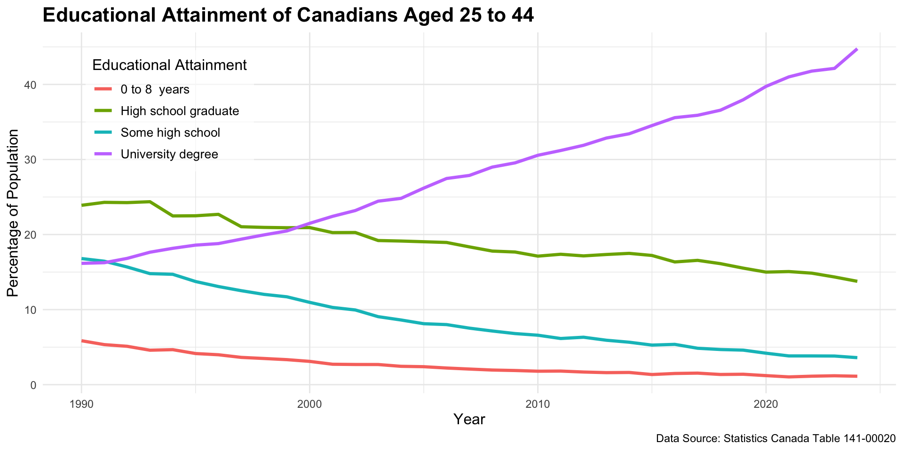
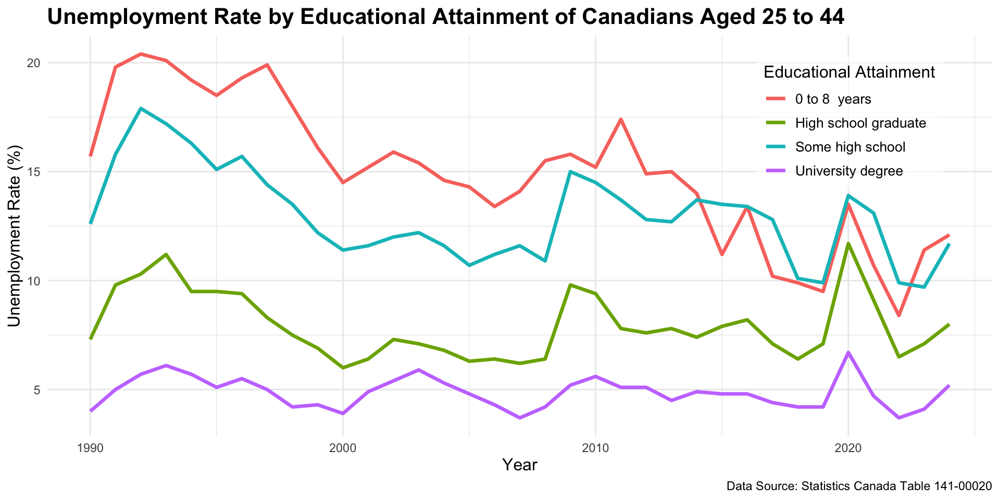
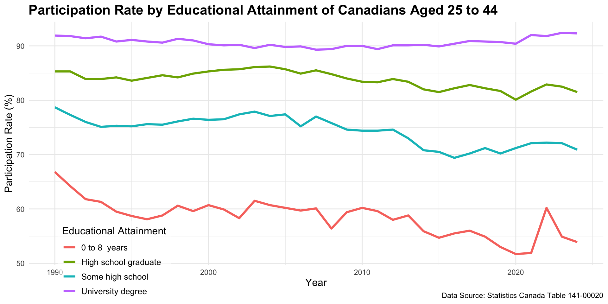
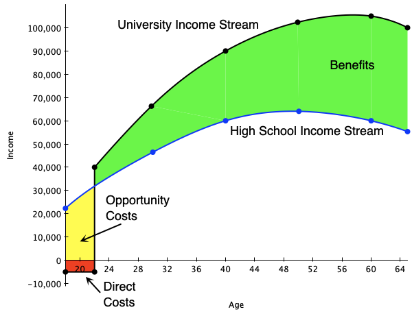
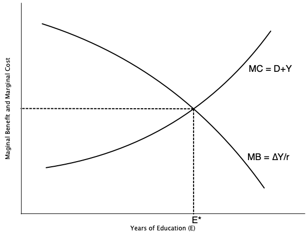
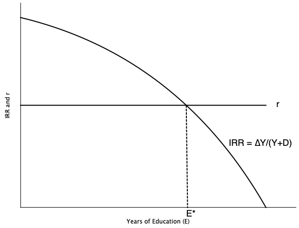
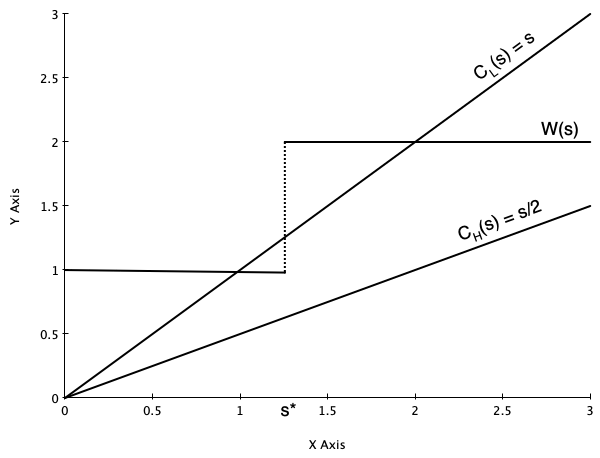

Human Capital Theory
EC306- Wages and Employment
Justin Smith
Wilfrid Laurier University
Fall 2025

Goals of This Section
Goals of This Section
Bring together demand and supply to determine wages and employment
Discuss the effect of market power in goods market on equilibrium wages and employment
Discuss the effect of market power in the labour market on equilibrium wages and employment
Analyze minimum wages
Introduction
Educational Attainment

Unemployment Rate

Participation Rate

Human Capital Theory
Human Capital Theory
- Firms often invest in physical capital (e.g., machines, tools, buildings)
- Incur some cost today to invest in capital
- Boosts the productive ability of workers
- Increases the output flow in the future
- Incur some cost today to invest in capital
- Decision to invest is made by comparing costs to benefits
- Invest if benefits outweigh costs
- Costs are usually upfront, while benefits occur slowly over time
- Invest if benefits outweigh costs
Human Capital Theory
- Individuals make similar investments in human capital
- Human Capital: An individual’s stock of productive skills, knowledge, and abilities
- People incur upfront costs for education, training, etc.
- Training improves productivity, and therefore income
- Individuals earn higher income streams in the future
- Human Capital: An individual’s stock of productive skills, knowledge, and abilities
- We will study investments in human capital in a similar way to physical capital
Human Capital Theory
Human capital investments involve some special considerations
- Non-wage benefits
- Consumption value
- Differences in risk of unemployment in downturns
- It is more difficult to finance education investments
- No collateral
- Non-wage benefits
Social versus private costs/benefits
- Private costs and benefits are specific to the individual
- But there may be social costs and benefits as well
- E.g., positive externalities from education
Private Investments In Education
Introduction
The human capital investment decision boils down to comparing lifetime income streams
- Different streams of income are associated with different levels of schooling
- Higher levels of schooling usually lead to higher income streams
- Different streams of income are associated with different levels of schooling
We will outline a process to decide which stream to choose
To make the model tractable, we assume:
- No direct utility or disutility from schooling
- Hours of work are held fixed
- Certainty of income streams
- Individuals can borrow and lend at interest rate \(r\)
Attending University
Suppose we want to analyze whether it is financially worthwhile to attend university
- Start from the perspective of an 18-year-old high school graduate
- This student is deciding whether or not to attend university
- Students who do not attend university move immediately into the workforce
- Start from the perspective of an 18-year-old high school graduate
The graph on next slide depicts two income streams:
- Black line: university path
- Blue line: high school path
- Red and yellow: costs of attending university
- Green: benefits of university education
- Black line: university path
Attending University

- Direct costs are in red
- Books, fees, tuition
- Foregone wages are in yellow
- Income not earned during the time in university
- Net gains in wages are in green
- Earnings of university grad above a high school grad
- Beneficial to attend if present value of green exceeds present value of yellow plus red
Attending University
People will choose the level of schooling that maximizes the net present value of lifetime earnings
We illustrated that graphically above
Mathematically, express the present value of earnings for a high school graduate as
\[PV = \frac{Y}{(1+r)^0} + \frac{Y}{(1+r)^1} + \ldots + \frac{Y}{(1+r)^{T-18}}\]
In this equation
- \(Y\) = annual earnings of high school graduate
- \(r\) = interest rate
- \(T\) = expected retirement age
Attending University
- We can approximate the present value of earnings for a high school graduate as
\[PV \approx Y + \frac{Y}{r} \]
Approximation works if \(T\) is long enough
Now consider a person who attends one year of university
They incur direct costs \(D\) in the first year and earn no income in that year
Every year they work, they gain an amount \(\Delta Y\) above the high school graduate
Attending University
- Their income stream is
\[PV^* = \frac{-D}{(1+r)^0} + \frac{Y + \Delta Y}{(1+r)^1} + \ldots + \frac{Y + \Delta Y}{(1+r)^{T-18}}\]
- This can be approximated as
\[PV^* \approx -D + \frac{Y + \Delta Y}{r} \]
- The net present value of attending this additional year of university is
\[NPV = PV^* - PV \approx -(D + Y) + \frac{\Delta Y}{r} \]
Attending University
The term \(D + Y\) is the marginal cost of attending university for one year
The term \(\frac{\Delta Y}{r}\) is the marginal benefit of attending university for one year
Attending university for one year is worthwhile if
\[NPV > 0 \implies \frac{\Delta Y}{r} > D + Y \]
- A person will continue to attend more years of schooling until \(MB = MC\), or
\[ \frac{\Delta Y}{r} = D + Y \]
Attending University

Graph on left illustrates optimal schooling decision
Marginal benefit curve is downward sloping
- Each additional year of schooling yields a smaller increase in wages
Marginal cost curve is upward sloping
- Each additional year of schooling incurs higher direct costs, foregone wages, psychic costs
Optimum is where MB = MC
Attending University
Another way to look at the schooling decision is through the rate of return to schooling
This method uses the concept of the internal rate of return (IRR)
The IRR is the interest rate that makes the NPV of an investment equal to zero
In our setup, the IRR is the interest rate that satisfies
\[ 0 = -(D + Y) + \frac{\Delta Y}{IRR} \]
- Rearranging gives
\[ IRR = \frac{\Delta Y}{D + Y} \]
- The IRR is the percentage return on the investment in schooling
Attending University
The alternative to attending university is to invest the money \(D + Y\) at the market interest rate \(r\)
- Opportunity cost of investing in schooling is \(r\)
If the IRR exceeds \(r\), then investing in schooling is worthwhile
A person would continue to attend more years of schooling until
\[ IRR = r \implies \frac{\Delta Y}{D + Y} = r \]
Attending University

Graph on left illustrates alternative optimal schooling decision
Market interest rate is \(r\)
Internal rate of return IRR is decreasing in schooling
- Each additional year of schooling yields a smaller increase in wages
Optimum is where IRR = r
Yields same optimal schooling level as previous method
Comparative Statics
We can use this framework to see how changes in parameters and policies affect schooling decisions
Suppose the direct costs \(D\) of attending university decrease
- E.g., government introduces tuition subsidies
- This decreases the marginal cost of schooling
- Leads to an increase in optimal schooling level
Suppose the market interest rate \(r\) decreases
- E.g., due to monetary policy
- This increases the present value of future earnings
- Leads to an increase in optimal schooling level
Comparative Statics
What if the income tax system becomes more progressive?
- Higher taxes on high income earners
- Decreases the after-tax increase in earnings \(\Delta Y\)
- Leads to a decrease in optimal schooling level
Suppose the pay for jobs in the oil sector increases substantially
- E.g., due to a boom in oil prices
- Increases the earnings of high school graduates \(Y\)
- Leads to a decrease in optimal schooling level
Complications
Information asymmetries
- Students may not know the true costs and benefits of schooling
- May lead to under- or over-investment in schooling
Disutility of schooling
- Students may dislike attending school
- This adds to the marginal cost of schooling
Different degrees have different returns
- Some fields of study lead to higher earnings than others
- Students must choose not only how much schooling, but what type
Complications
A major complication is financing/credit constraints
- Many students cannot afford the upfront costs of schooling
- May not be able to borrow against future earnings
- Leads to under-investment in schooling compared to optimal level
Signalling
Introduction
- In the Human Capital model, there are key assumptions that make the model work:
- Education increases productivity
- Productivity is perfectly observed by employers
- Wages are paid according to productivity
- Education increases productivity
- The signalling model emphasizes an alternative view:
- Education may not increase productivity
- Instead, it reveals productivity to employers
- It acts as a signal of worker ability
- People only invest in education to signal their ability to employers
Model
The basics of the model are
- Employers do not observe productivity until after a worker is hired
- Employees know their own ability but find it difficult to credibly reveal it to employers
- Without knowing productivity, firms pay employees according to average productivity in the population
- Under certain conditions, obtaining education can serve as a signal of productivity, allowing workers to be paid accordingly
- Employers do not observe productivity until after a worker is hired
Model
- For education to actually be informative about ability:
- It must be costly to acquire
- It must be sufficiently more costly for low-ability individuals than for high-ability individuals
- Otherwise, low-ability workers might find it profitable to fake high ability by acquiring education
- Otherwise, low-ability workers might find it profitable to fake high ability by acquiring education
- Employers’ beliefs must be confirmed in the future
- Otherwise, they will update their wage offers
- It must be costly to acquire
- Given the conditions above, education helps solve an information problem:
- It correctly reveals ability through educational attainment
- High- and low-ability workers are then correctly paid according to their productivity
- It correctly reveals ability through educational attainment
Model
Below we do a more formal treatment of the model
Assume that:
There are two types of workers: low ability (L) and high ability (H)
A fraction \(q\) are Type L, and \((1 - q)\) are Type H
For Type L workers:
- Cost of education: \(c_L(s) = s\)
- Marginal Product (MP): \(1\)
- Cost of education: \(c_L(s) = s\)
For Type H workers:
- Cost of education: \(c_H(s) = \frac{s}{2}\)
- Marginal Product (MP): \(2\)
- Cost of education: \(c_H(s) = \frac{s}{2}\)
Model
Employees know their own ability, but employers do not
Employers instead form beliefs about employee ability based on observed education levels
What would happen if there were no way to signal ability?
Firms would have no way of knowing who is high or low ability
- So they offer everyone the same wage.
The wage equals the average productivity:
\[\bar{w} = 1 \cdot q + 2 \cdot (1 - q) = 2 - q\]
Model
Example: 50% Low-Ability Workers
- If 50% of the population are low ability \(( q = 0.5)\):
\[\bar{w} = 2 - q = 1.5\]
Recall that
- Type L workers produce \(MP = 1\)
- Type H workers produce \(MP = 2\)
- Type L workers produce \(MP = 1\)
Therefore:
- Type L is paid more than they produce
- Type H is paid less than they produce
- On average, total pay equals total production
- Type L is paid more than they produce
Model
Suppose employers observe education
They form beliefs about how it relates to ability, and pay according to those beliefs.
One possible set of employer beliefs:
- Workers with education \(s > s^*\) are Type H
- Workers with education \(s \le s^*\) are Type L
- \(s^\) is some cutoff level of education
- Workers with education \(s > s^*\) are Type H
Firms pay wages according to the believed type:
\[w = \begin{cases} 2, & \text{if } s > s^* \\ 1, & \text{if } s \le s^* \end{cases}\]
Model
- In this model, workers decide how much education to acquire.
- A worker of type ( t ) maximizes utility:
\[ U_t(s) = w(s) - c_t(s) \]
- All workers can obtain \(U_t(s) = 1\) by acquiring no education.
- Therefore, the payoff to acquiring any education must satisfy \(U_t(s) \ge 1\)
- Workers will never find it useful to obtain more than \(s^*\) years of education.
- Doing so increases costs without increasing payoffs.
- Doing so increases costs without increasing payoffs.
- Thus, the decision is binary: either 0 or \(s^*\) years of education.
Model
- Type H Workers
\[ U_H(0) = w(0) - c_H(0) = 1 - 0 = 1 \]
\[ U_H(s^*) = w(s^*) - c_H(s^*) = 2 - \frac{s^*}{2} \]
- A Type H worker will acquire \(s^*\) years of education if:
\[ U_H(s^*) > U_H(0) \]
\[ 2 - \frac{s^*}{2} > 1 \]
\[ s^* < 2 \]
Model
- For Type L Workers
\[ U_L(0) = w(0) - c_L(0) = 1 - 0 = 1 \]
\[ U_L(s^*) = w(s^*) - c_L(s^*) = 2 - s^* \]
- A Type L worker will acquire \(s^*\) years of education if:
\[ U_L(s^*) > U_L(0) \]
\[ 2 - s^* > 1 \]
\[ s^* < 1 \]
Model
- If \(s^* < 1\):
- Both Type L and Type H acquire education \(s^*\)
- The signal is not informative
- If \(s^* > 2\):
- Both Type L and Type H acquire no education
- The signal is not informative
- Both Type L and Type H acquire no education
- If \(1 < s^* < 2\):
- Type H obtains education \(s^*\)
- Type L obtains no education
- Education reveals worker type
- Type H obtains education \(s^*\)
Model
Equilibrium
Occurs when \(s^*\) lies between 1 and 2.
- This is an equilibrium because the beliefs based on this strategy are correct
- A firm can only maintain beliefs if they are validated by observed behaviour
- This is an equilibrium because the beliefs based on this strategy are correct
Any \(s^*\) between 1 and 2 will satisfy equilibrium conditions
- The equilibrium with the highest welfare is the one closer to \(s^* = 1\)
This is called a separating equilibrium.
- When everyone gets the same level of education, it is a pooling equilibrium.
- The case where there is no education signal is one example of a pooling equilibrium.
- When everyone gets the same level of education, it is a pooling equilibrium.
Model
